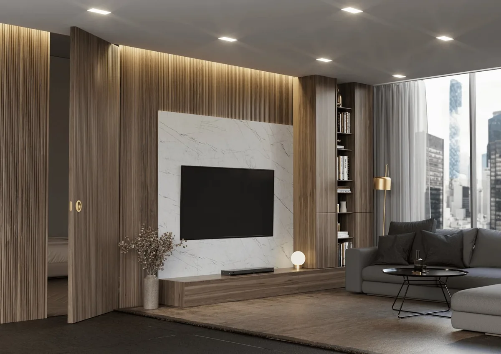
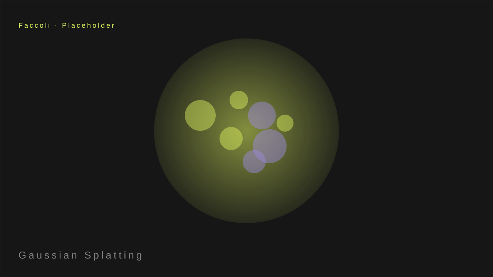

Portare un prodotto o un ambiente reale in 3D è sempre stato un lavoro lungo: o modellazione manuale, o scanner costosi, o mesi di fotogrammetria pesante. Il Gaussian Splatting cambia la partita.
Con una serie di foto da drone o da macchina fotografica, si ricostruisce una scena ad altissima fedeltà, pronta per il web, senza modellazione manuale.

Cosa significa per la manifattura
È la frontiera del "dal fisico al digitale": un prodotto, un macchinario, uno showroom o un cantiere vengono catturati e ricostruiti in 3D realtime. Il cliente vede l'oggetto reale, dal vero, in pochi giorni.
Acquisire dal vero
Drone o camera, centinaia di immagini, una pipeline ad alta barriera: la fedeltà al reale è la differenza che l'AI generativa non sa ancora fare con coerenza.

La pipeline
- Acquisizione: drone o camera, centinaia di immagini.
- Ricostruzione: pipeline ad alta barriera (Lichtfeld / COLMAP) trasforma le foto in una scena 3D.
- Web: il risultato va nel browser, navigabile e interattivo.

Questa è esattamente la categoria di lavoro che l'AI generativa non sa ancora fare con coerenza: la fedeltà al reale. È il moat di chi opera tra fisico e digitale.
La differenza la fa l'acquisizione dal vero: è un gradino ad alta barriera che si sposa con configuratori e architettura visuale.
Hai un prodotto o un ambiente da portare in 3D?
Raccontami il progetto: ti dico la strada più rapida dal fisico al digitale.
Parlaci del tuo progetto →